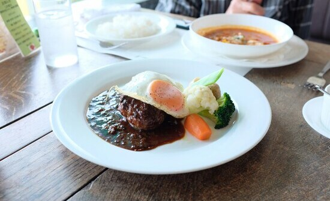

Питайся правильно
1. Обязательно ешь мясо - свинину, говядину, баранину. Мясо содержит белок - главный строительный материал для всех клеток организма. Мясо - источник железа, витамина В12 и D3. Мясо необходимо для поддержания мышечной массы и укрепления костей. Мясо положительно влияет на работу головного мозга (улучшает память, внимание и мышление, профилактика болезни Альцгеймера), а также поддерживает работу щитовидной железы. Не стоит есть мясо фабричной курицы из-за высокого содержания химических веществ, гормонов роста и антибиотиков. Человек не может жить без мяса. Вегетарианство не подходит человеку, если он хочет быть здоровым.
2. Введи в рацион полезные насыщенные жиры - сливочное масло, топленое масло, говяжий жир, сало, кокосовое масло. Дело в том, что жиры входят в состав клеточных мембран, без них невозможна слаженная работа внутренних органов. Насыщенные жиры снижают уровень холестерина, улучшают работу сердечно-сосудистой системы, печени, легких и головного мозга. Убери жидкие растительные масла из семян (подсолнечник, соя, кукуруза), так как в них содержатся Омега-6 (трансжиры). Не используй для жарки нерафинированные масла и масла с низкой точкой дымления (соевое, кукурузное, арахисовое, кунжутное и тыквенное), потому что при нагревании они выделяют канцерогены. Лучше готовить на топленом, кокосовом масле, масле авокадо или говяжьем жире.
3. Убери сахар и сахаросодержащие продукты, которые вызывают воспаление в организме - основа рака, артрита, сердечно-сосудистых заболеваний, всех аутоиммунных заболеваний. Сократи употребление фруктозы (фруктового сахара). Фруктоза меняет метаболизм жиров, вызывая ожирение и инсулинорезистентность, а также разрушает печень. Лучше избегать экзотических фруктов (ананасы, бананы и пр.)
4. Исключи из рациона продукты из сои и кукурузы, так как они генно-модифицированные. Дело в том, что соя очень часто становится объектом эксперементов генетиков. Безопасность измененной еды не доказана, поэтому лучше избегать ее.
5. Сократи количество сырых овощей. Овощи полезнее есть в приготовленном виде - термически обработанные. Ученые выяснили, что сырые овощи уничтожают полезные бактерии в кишечнике, а термически обработанные, наоборот, действуют на микрофлору положительно. Также следует очищать от кожуры овощи и фрукты из-за накопления в ней вредных химических веществ - нитратов и пестицидов.
6. Сократи в своем рационе орехи. Дело в том, что в орехах могут присутствовать микотоксины - токсичные соединения, продукт жизнедеятельности некоторых плесневых грибов. Безопаснее всего лесные и кедровые орехи. Кроме того, полезно знать, что в миндале содержатся цианиды, употребление которых может привести к тяжелому отравлению.
7. Введи в рацион ферментированные продукты - квашеную капусту, малосольные огурцы, моченые яблоки, клюкву, бруснику. При хорошей переносимости лактозы добавь в рацион йогурт, сметану, сливки, кефир, творог, молодые сыры (адыгейский, брынза, сулугуни, фета, моцарелла, маскарпоне, буррата, страчателла).
8. По возможности исключи глютенсодержащую продукцию, хлебо-булочные изделия и цельное коровье молоко.